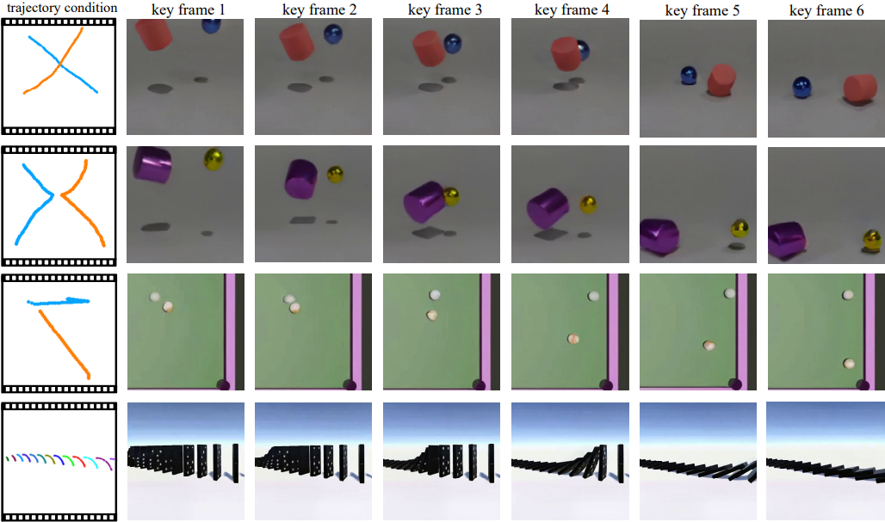
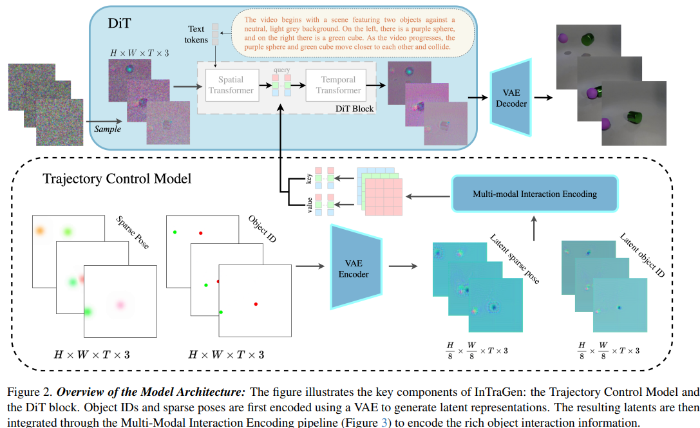
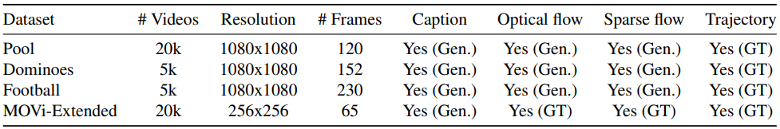
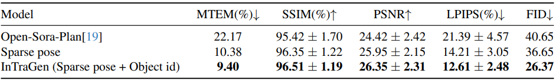

Arxiv
Arxiv Code
Code

Abstract
InTraGen introduces a novel pipeline for generating realistic object interaction scenarios using trajectory control. By leveraging a multi-modal interaction encoding pipeline and object ID injection, it enhances interactions between objects and their environment. Four new datasets and a trajectory quality metric are proposed for evaluation. Results demonstrate improved visual fidelity and quantitative performance.
Key Contributions
- Introduction of a multi-modal interaction encoding pipeline that integrates sparse pose encoding and object ID maps.
- Development of the Video Interaction (ViN) dataset with four subsets: Pool, Dominoes, Football, and MOVi-Extended.
- Proposal of a new evaluation metric, the Matching Trajectory Evaluation Metric (MTEM), for trajectory quality assessment.
- Extensive experiments showcasing improvements in trajectory adherence and interaction realism over baseline methods.
- Use of a Diffusion Transformer (DiT) for long-term video generation, guided by trajectory conditions.
Methods
InTraGen leverages a multi-modal interaction encoding mechanism, which integrates sparse pose encoding and object ID maps to capture dynamic, static, and interactive information. The method employs a Diffusion Transformer (DiT) for long-term video generation, guided by trajectory conditions.
Datasets
The Video Interaction (ViN) dataset is introduced, containing four subsets: Pool, Dominoes, Football, and MOVi-Extended. These datasets feature diverse scenes, high-quality visuals, and rich object interactions. Ground truth trajectories and various evaluation metrics are included to support model training and validation.
Experiments
Extensive experiments were conducted to evaluate InTraGen's performance. Metrics such as Matching Trajectory Evaluation Metric (MTEM), SSIM, PSNR, LPIPS, and FID were used to demonstrate improvements over baseline methods.
Results
InTraGen achieves superior results in trajectory adherence and interaction realism. Quantitative comparisons and user studies confirm its effectiveness. Qualitative examples highlight the realistic and visually pleasing outputs generated by the model.